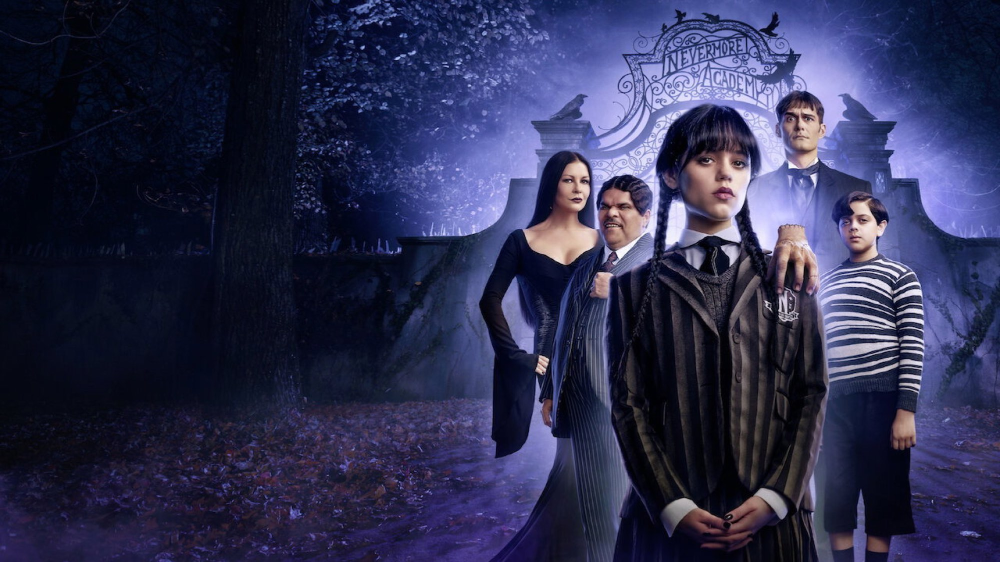
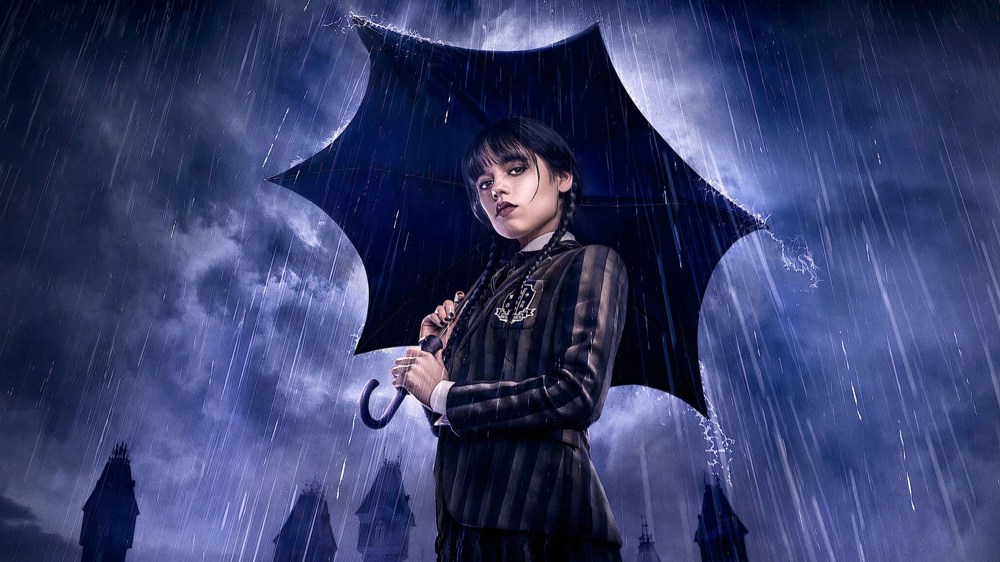

Wednesday – Stagione 2
Il momento migliore del nuovo ciclo non è il mistero, ma lo scambio di corpi tra Mercoledì ed Enid. Attorno, il giallo si affolla di personaggi e perde la presa
Il momento migliore della seconda stagione di Wednesday arriva quando la serie smette di fare la detective. Nella sesta puntata, «La tristezza in te», Mercoledì ed Enid si svegliano ciascuna nel corpo dell'altra. Enid, finita nel corpo di Mercoledì, si veste con i colori dell'arcobaleno e balla K-pop nel cortile di Nevermore. Mercoledì, finita in quello di Enid, lascia Bruno dopo averlo sentito parlare in tagalog con la fidanzata che ha nelle Filippine. È la scena che somiglia di più a ciò che la serie sa fare davvero, e ci spiega perché il resto del ciclo ci ha convinto meno.
La scena che vale la stagione
Lo scambio nasce da un rito sulla lapide della maga Rotwood, interpretata da Lady Gaga, e funziona per una ragione semplice: costringe le due attrici a recitare l'opposto di sé. Jenna Ortega, impassibile per tutta la serie, deve fare Enid, che è l'allegria in persona. Emma Myers, che di Enid è il sorriso, deve diventare Mercoledì. Le due attrici, come riporta SoapCentral, si sono accordate per dirsi in faccia ciò che non funzionava e per evitare un'imitazione scadente, e quella franchezza si ritrova nella scena: lo scambio si scioglie proprio con una confessione. Il recap di Jonathon Wilson su Ready Steady Cut titola l'episodio come una parodia di Freaky Friday, e il paragone regge: come nel film, la gag funziona solo se ciascuna sembra davvero convinta di essere l'altra.
Il risultato è comico, ma non solo. Per tornare nei propri corpi devono confessarsi dei segreti, e la confessione davanti alla lapide, che Wilson chiama «un bel momento, e in ritardo di parecchio», dà all'amicizia la sua scena più onesta del ciclo. Wilson giudica l'episodio brillante perché esalta tutto ciò che la serie già fa bene, e su questo siamo d'accordo: qui il tono tiene perché la puntata ha una sola idea e la porta fino in fondo. Lady Gaga, per giunta, ha una funzione precisa, perché è la Rotwood a far partire lo scambio. Sul suo ruolo ci allontaniamo quindi da chi lo trova ornamentale: nella sesta puntata serve alla trama.
In italiano le due voci sono quelle di Chiara Fabiano per Mercoledì e di Margherita Rebeggiani per Enid, con la direzione di Perla Liberatori e i dialoghi di Emanuela D'Amico per Dubbing Brothers.
Di cosa parla la seconda stagione di Wednesday?
Mercoledì Addams torna alla Nevermore Academy con poteri psichici che non funzionano più come prima. Le visioni, che nella prima stagione le davano un passo di vantaggio, ora si inceppano, e lei deve inseguire il mistero invece di anticiparlo. Il nuovo preside Barry Dort, interpretato da Steve Buscemi, le offre subito il ruolo di studentessa d'onore, mentre Pugsley si iscrive all'accademia e la famiglia Addams, con Catherine Zeta-Jones e Luis Guzmán, prende molto più spazio. Joanna Lumley è la nonna Hester Frump.
È una scelta intelligente, perché toglie al personaggio la sua arma migliore e lo costringe a fare i conti con il dubbio. Ortega non cambia registro, resta asciutta, ma proprio quella fissità rende più evidenti i momenti in cui Mercoledì vacilla.
Dove la stagione si perde
Il problema è la struttura, che si affolla di nuove minacce. Valentina Ariete su Movieplayer descrive un racconto più verticale che orizzontale, con puntate che fanno quasi storia a sé e scene a effetto pensate per i social più che per costruire un arco. Noi lo vediamo nel sesto episodio, che chiude con un avvertimento di Weems: la morte prevista non riguarda più Enid, ma un membro della famiglia Addams. La posta in gioco cambia a due puntate dalla fine, nello stesso episodio in cui Mercoledì scopre chi è Isaac, quindi il nemico dell'ultimo atto deve guadagnarsi lo spettatore in pochissimo tempo.
Una lettura ancora più severa arriva da Serena Faro su Hall of Series, che parla di «goth e macabro burtoniano sacrificati sull'altare dell'algoritmo». Salva però la sequenza animata, omaggio a Frankenweenie, e riconosce il talento di Ortega, che è la ragione per cui la serie regge anche quando la trama si sfilaccia. Sulla durezza del giudizio siamo più cauti, perché lo scambio di corpi basta da solo a smentire l'idea di una serie senza ispirazione.

Il gotico di Burton, trasferito in Irlanda
Tim Burton dirige gli episodi 1, 4, 7 e 8, mentre Paco Cabezas firma il secondo e il terzo e Angela Robinson il quinto e il sesto, quello dello scambio. Il debutto era stato girato in Romania, con il castello Cantacuzino a fare da Nevermore; il seguito si è spostato in Irlanda, tra il Charleville Castle nella contea di Offaly e il cimitero di Dean's Grange vicino a Dublino, con i set agli Ashford Studios nel Wicklow. Pietra vera e tombe vere danno alla serie un gotico più concreto, ma l'episodio migliore del ciclo non è uno dei quattro di Burton: è della Robinson, e il merito va alle due attrici più che alle scenografie.
Cosa dicono i numeri
L'accoglienza è stata positiva, persino migliore di quella della prima stagione: a ottobre 2026 la seconda ha l'87% di recensioni positive su Rotten Tomatoes, contro il 74% del debutto. Il giudizio riassuntivo premia l'apertura a tutto il clan Addams, che circonda Ortega di personaggi più strambi e più spaventosi, ma per noi proprio quell'apertura è anche il limite. Le riprese irlandesi sono andate dal 7 maggio al 4 dicembre 2024, quasi sette mesi per otto puntate, perciò la cura di scenografie e costumi non stupisce. Netflix ha rinnovato la serie per un terzo ciclo a luglio 2025.
Vale la pena vederla?
Sì, se avete amato la prima stagione e Jenna Ortega, e in particolare se vi piace il rapporto con Enid: troverete più Addams e più atmosfera, ma soprattutto un episodio che da solo giustifica la visione. Chi cerca un giallo compatto, invece, resterà in parte deluso, perché la trama si ingarbuglia proprio quando dovrebbe stringere. Per chi arriva attratto da Burton, un avviso: il meglio di questi otto episodi è firmato da un'altra regista, ed è su Netflix.
Wednesday 2 vale la visione per un solo episodio, il sesto, in cui l'amicizia tra Mercoledì ed Enid fa ciò che il giallo non riesce a fare.
Domande frequenti
Quanti episodi ha Wednesday 2?
Otto, usciti su Netflix in due parti: quattro il 6 agosto 2025 e quattro il 3 settembre 2025.
Lady Gaga è in Wednesday 2?
Sì, interpreta la maga Rotwood nella sesta puntata, quella dello scambio di corpi tra Mercoledì ed Enid.
Ci sarà una terza stagione di Wednesday?
Sì, Netflix ha rinnovato la serie per un terzo ciclo nel luglio 2025.
Fonti consultate (7)
- Wikipedia – Wednesday (TV series)
- Wikipedia – Mercoledì (serie televisiva), doppiaggio e cast
- Wikipedia – Episodi di Mercoledì (seconda stagione)
- Ready Steady Cut – Wednesday 2x06 recap (Jonathon Wilson)
- SoapCentral – Emma Myers sullo scambio di corpi (Deanne Dsilva)
- Movieplayer – Mercoledì 2, recensione della Parte 2 (Valentina Ariete)
- Hall of Series – Mercoledì 2, recensione della Parte 2 (Serena Faro)